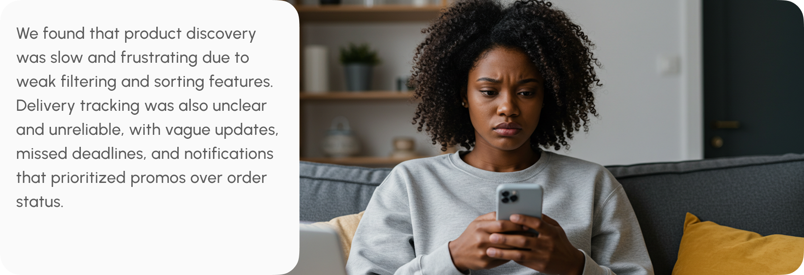
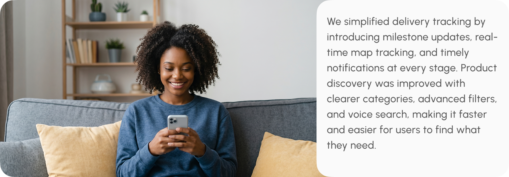
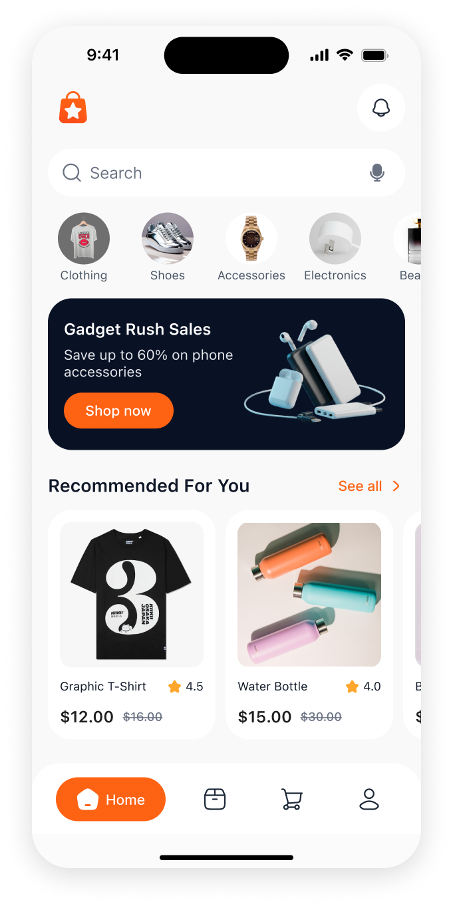
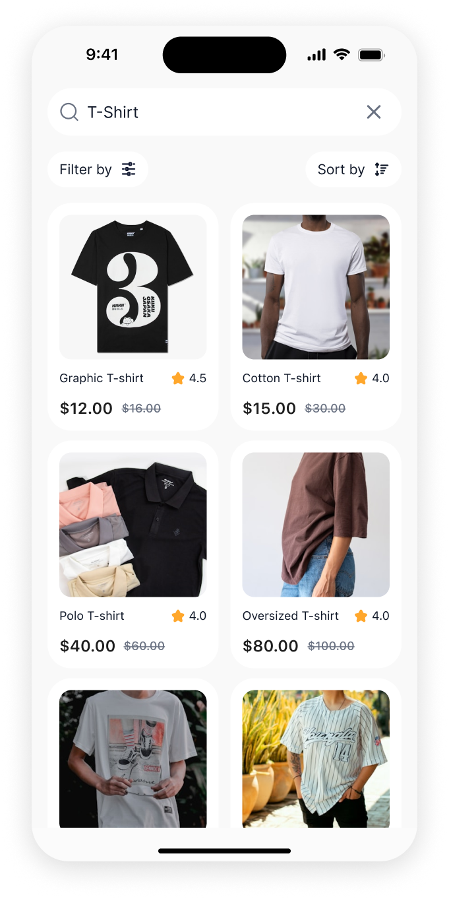
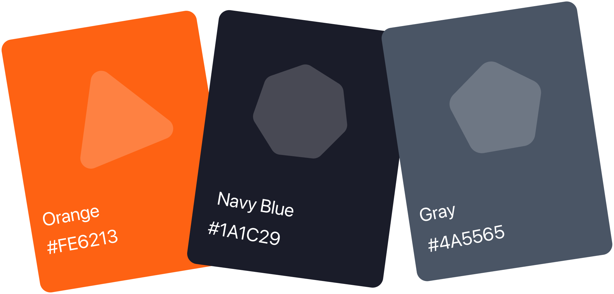

Kikuu E-commerce Platform
A Freelancing and Side Gigs Platform


Overview
Summary
Kikuu is one of Africa's fastest-growing e-commerce platforms, connecting buyers and sellers across multiple African countries. The platform enables everyday entrepreneurs to set up shops and reach customers far beyond their local market — making it a hub for freelancers, small business owners, and side hustlers.
This project involved a comprehensive redesign of the Kikuu mobile experience, focusing on three key areas: improving product discoverability with smarter search and categories, streamlining the checkout flow to reduce abandonment, and introducing real-time delivery tracking so buyers always know where their order is.

Project Highlights
A peek into some of the key screens and interactions designed for the Kikuu mobile experience.


Problem Statement

The Challenge
Kikuu's existing mobile app created significant friction for users trying to shop. Product search returned irrelevant results, the category structure was overwhelming with 200+ top-level categories, and the checkout process stretched across 7 steps — leading to high cart abandonment rates.
Buyers also had zero visibility into their order status after purchasing, causing anxiety and a flood of customer support tickets asking "Where is my order?"
Solution
How We Solved It
We introduced smart search with auto-suggestions and visual filters, restructured categories into 12 intuitive groups with visual icons, and cut checkout down to 3 clear steps.
The crown jewel of the redesign was a live delivery tracking map — buyers can now watch their order move in real time, from the seller's location to their doorstep.

Design Process
I followed a double-diamond design process — diverging to explore problems and possibilities before converging on refined, tested solutions.
Empathize
Conducted 15 in-depth user interviews with active Kikuu buyers and sellers. Ran a competitive analysis across 6 African e-commerce apps to benchmark the experience landscape.
Define
Synthesized interview data into user journey maps, affinity diagrams, and a clear problem statement. Identified 3 critical pain points that were causing the most user drop-off.
Ideate
Ran 3 design sprint sessions with stakeholders, generating 60+ solution ideas. Prioritised ideas using an impact vs effort matrix, picking the top 8 concepts to explore further.
Prototype
Built low-fidelity wireframes in Figma, iterated to high-fidelity prototypes with complete interaction flows covering search, checkout, and order tracking.
Test & Iterate
Conducted moderated usability testing sessions with 20 participants. Gathered qualitative and quantitative data, then iterated through 2 more design rounds before final handoff.

Wireframes
From rough sketches to structured low-fidelity wireframes, exploring layout and flow before committing to visual design.




Visual Design
Building a cohesive design language — from colour palette and typography to component library and brand expression.


Key Screens
The final high-fidelity screens — polished, responsive, and ready for handoff.


User Research
Before touching Figma, I spent two weeks talking to real users — buyers who shopped weekly on Kikuu and sellers managing their storefronts from their phones.

Key insight: users trusted the platform but felt the experience was "stressful" and "confusing." They wanted simplicity — not more features.
User Personas
Meet the two primary user types that shaped every design decision.


Research Summary
After synthesising insights from interviews, surveys, and usability sessions, three data points emerged that defined the design direction for the entire project.